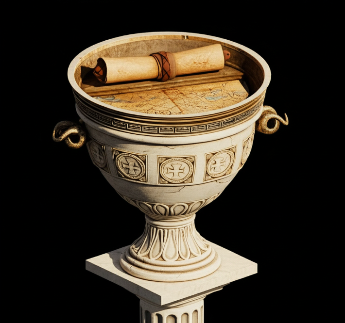

Final neutral: Alianza inesperada
Sholmes acepta: "Una vez. Pero si me engañás, te atraparé.Ambos entran a la cámara secreta juntos.
Lupin y Sholmes descubren que el tesoro era solo una pista falsa. Un antiguo mapa. La aventura apenas comienza.